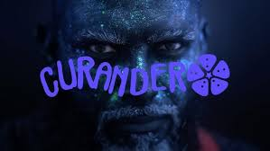

“Bailar en la Oscuridad es mirar el espejo afuera para poder ir adentro, abrazar nuestra sombra y flotar en la experiencia del todo mientras danzamos como danza el fuego.”
Hay equilibrio en las voces y flows de Curandero y Ximbo, quienes rapean con ligereza y precisión de flecha. El estribillo es hipnótico, coqueteando con un violín místico y una guitarra orgánica que nos conecta directamente con la tierra.

Este corte es un tremendo viaje bajo la producción de Helio Martín del Campo en SNX Studio. Una invitación a soltar energía para abrir espacio a que más luz fluya con nuestro torrente interno. ¡A bailar se ha dicho!

CURANDERO
“Healing latin music”; música para vibrar bonito. Experimenta con ritmos latinos y afroantillanos para conectar con el movimiento interno.
Seguir en InstagramXIMBO
Femcee de CDMX con 3 décadas de trayectoria. Referente del rap consciente, fundadora de Rimas Femeninas y promotora del Hip hop independiente.
Seguir en Instagram